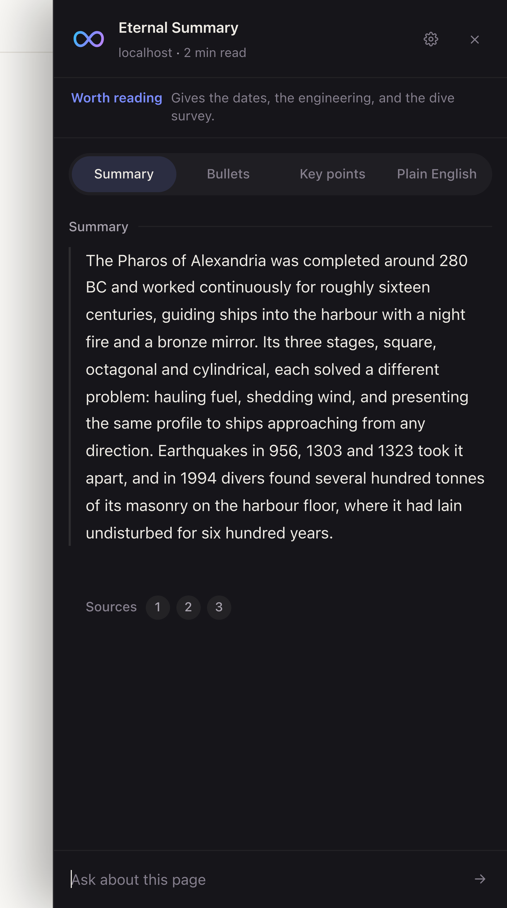
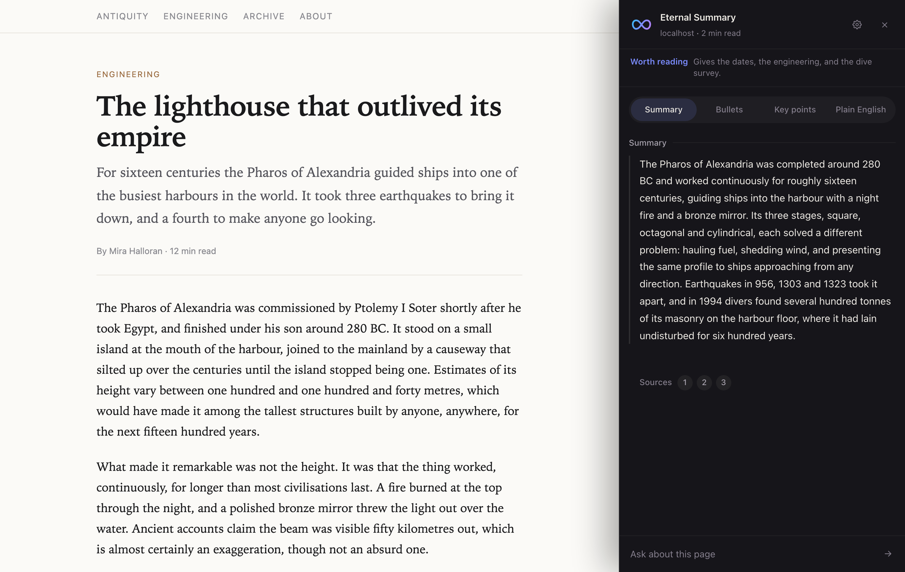
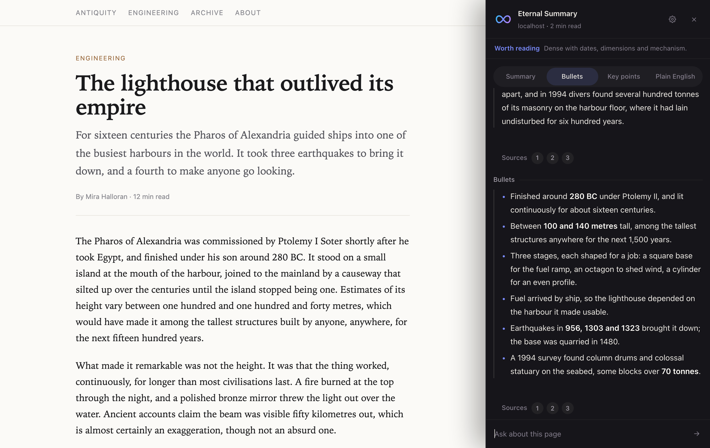
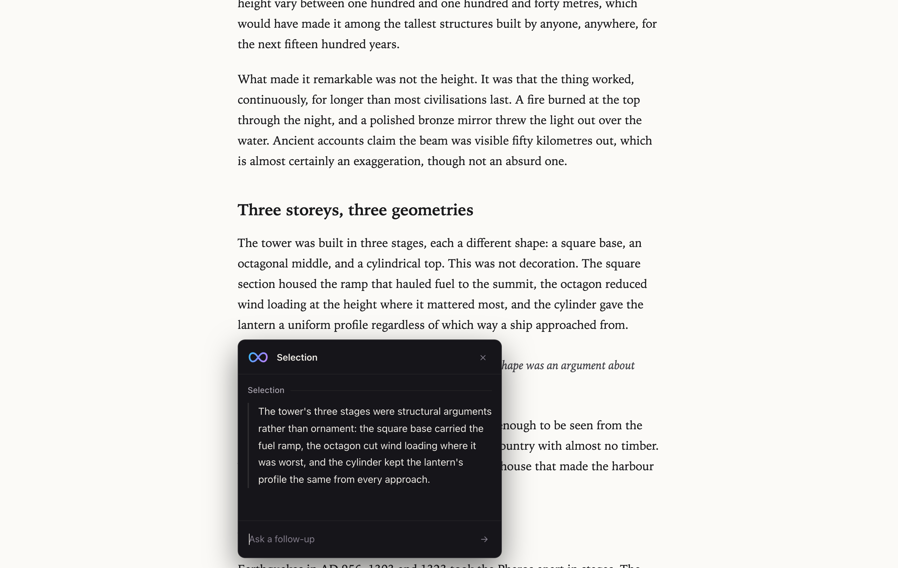
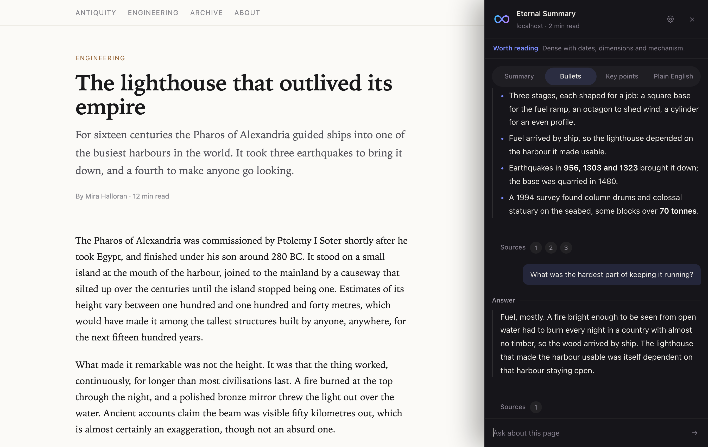

Read the page, not all of it.
A Chrome extension that summarizes whatever you are reading, answers questions about it, and shows you the exact passages it drew on. It opens beside the article instead of on top of it, so you never lose your place.

What it does
A reading instrument, not a chatbot in a drawer.
Everything here is built around one idea: the page stays in front of you, and the summary is answerable to it.
The whole page, not its opening
Long pages are sampled across three windows, beginning, middle and end, so a piece that starts slowly is not mistaken for padding and a live feed is not summarized from its oldest entries.
Numbered sources you can jump to
Each summary carries footnotes quoting the page verbatim. Click one and the article scrolls to that passage and highlights it. A snippet that cannot be found says so rather than pretending.
Worth reading, or not
Alongside the summary it tells you whether the page is worth your time, read, skim or skip, with one short clause saying what decides it.
Highlight anything
Select text and a card opens anchored to it, summarizing just that passage. It is pinned in page coordinates, so scrolling carries the card and the passage together.
Follow-up questions
A real thread. Every turn is kept, switching summary modes adds to the conversation instead of clearing it, and background questions the page does not cover are answered and marked as such.
Four ways to be summarized
Summary, bullets, key points, or plain English. Switching re-reads the page in the style you picked, and the panel can remember your choice or open on a fixed default.
In your language
Answer in any of thirteen languages while the source snippets stay in the page's own words, which is what keeps them findable on the page.
Yours to arrange
Panel on either side at three widths, selection card at three sizes, the floating button and the passage highlight on or off, text animation on or off, and summaries reused for thirty minutes or never.
Untouchable by the page
The interface renders in a shadow root, so a site's stylesheet cannot squash or recolour it, and keystrokes typed into it never reach the page's own keyboard shortcuts.
Nothing stored anywhere but here
Summaries are cached in extension storage on your machine for thirty minutes and can be cleared from the gear. There is no account and no profile.
A look
Beside the article, never over it.
The page is inset by the width of the panel rather than covered, which is why jumping to a source can scroll the article without closing anything.




How to use it
Three ways in.
Summarize the page
Click the icon in the toolbar, or press Cmd Shift S on a Mac, Ctrl Shift S elsewhere. The panel opens beside the article and the summary arrives with its sources. Escape closes it.
Summarize a highlight
Select any text and a Summarize button appears next to it. The card that opens is about that passage alone, and it holds its own conversation, separate from the panel's.
Ask about what you read
Type into the composer at the bottom of either one. Answers cite the page where the page answers, and say plainly when they are drawing on general knowledge instead.
Install
Four steps, about a minute.
Not on the Chrome Web Store yet, so it loads unpacked. That also means you can read every line of what you are running.
-
Clone the repository
git clone https://github.com/Alitleis123/Eternal-Summary.git -
Open your extensions page
Go to chrome://extensions and turn on Developer mode, top right.
-
Load it unpacked
Click Load unpacked and choose the folder you just cloned. The mark appears in your toolbar.
-
Open something worth reading
Click the icon on any article. If you change the code later, reload the extension from the same page to pick it up.
About
Built by Ali Tleis.
Eternal Summary began with a small annoyance: deciding whether a long article was worth reading meant reading it first. I wanted something that could answer that question in the tab I was already in, and show its work.
The extension is vanilla JavaScript with no build step and no dependencies. The interface lives entirely in a shadow root so that no site can interfere with it. A small Node and Express service on Fly.io holds the API key and talks to Gemini, so nothing is called directly from the page.
The design is meant to read as an editorial instrument rather than a dashboard: warm near-black, warm off-white, soft geometry, and one gradient, carried by the mark above and nowhere else.
- Version
- 1.6.0
- Manifest
- v3
- Dependencies
- none
- Build step
- none
- Accounts
- none
- Model
- Gemini
- Cache
- 30 min, local